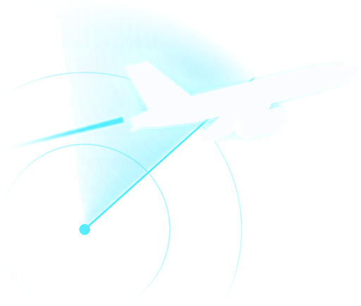
QuotaLive air traffic, weather and airports.
For iPhone, iPad, Mac and Apple Watch.
Traffico aereo in diretta, meteo e aeroporti.
Per iPhone, iPad, Mac e Apple Watch.
Free. No ads, no account.Gratis. Niente pubblicità né account.
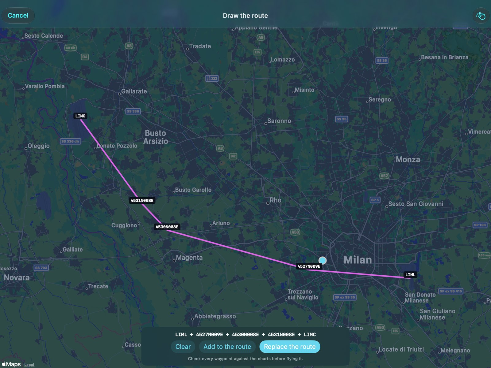
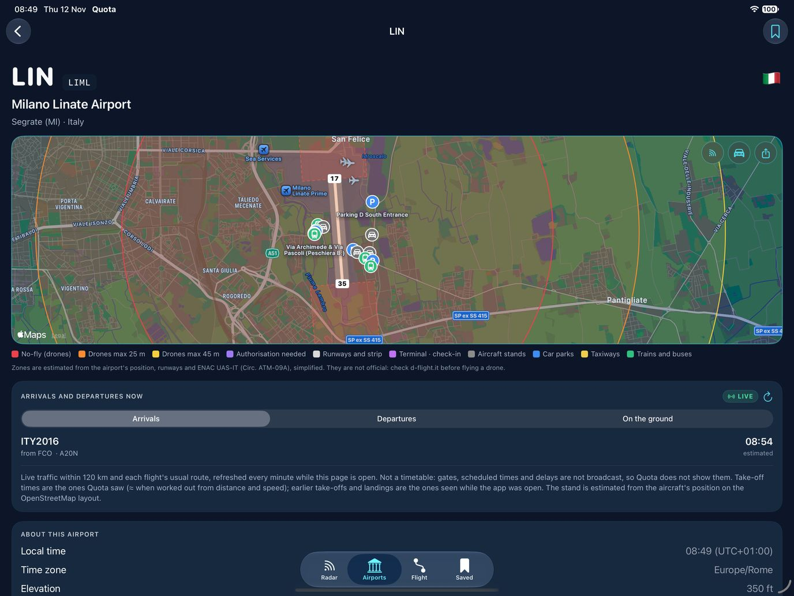
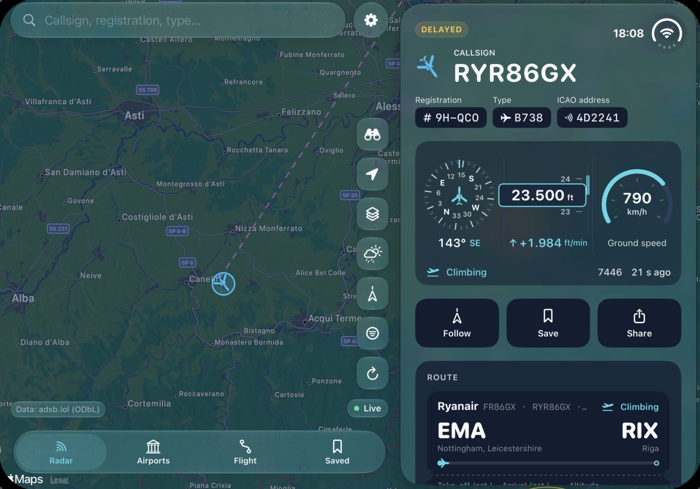
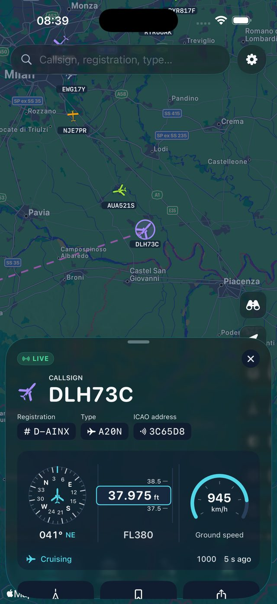
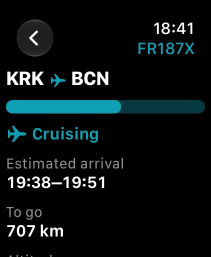
iPhone
The card slides up from the bottom. Widgets, Live Activity and the Dynamic Island.
La scheda sale dal basso. Widget, Live Activity e Dynamic Island.
iPad
The map fills the screen, with the details beside it, in portrait and landscape.
La mappa riempie lo schermo, con i dettagli accanto, in verticale e in orizzontale.
iPhone Duo
The card moves to the side when you unfold it, and back when you fold it.
La scheda passa di lato quando lo apri e torna in basso quando lo chiudi.
Mac
On Apple silicon, in a window you can resize.
Su Apple silicon, in una finestra che puoi ridimensionare.
Apple Watch
The aircraft you follow and your saved flights, with complications.
L'aereo che segui e i voli salvati, con le complicazioni.
Optimized for iPhone Duo
Ottimizzata per iPhone Duo
Closed, it works like any iPhone: the map on top, the details at the bottom.Chiuso funziona come ogni iPhone: la mappa sopra, i dettagli in basso.
Unfold it and the aircraft card moves to the side, where it no longer hides the map. Nothing reloads.Lo apri e la scheda dell'aereo passa di lato, dove non copre più la mappa. Niente si ricarica.
The same app and the same data, folded or unfolded.La stessa app e gli stessi dati, chiuso o aperto.
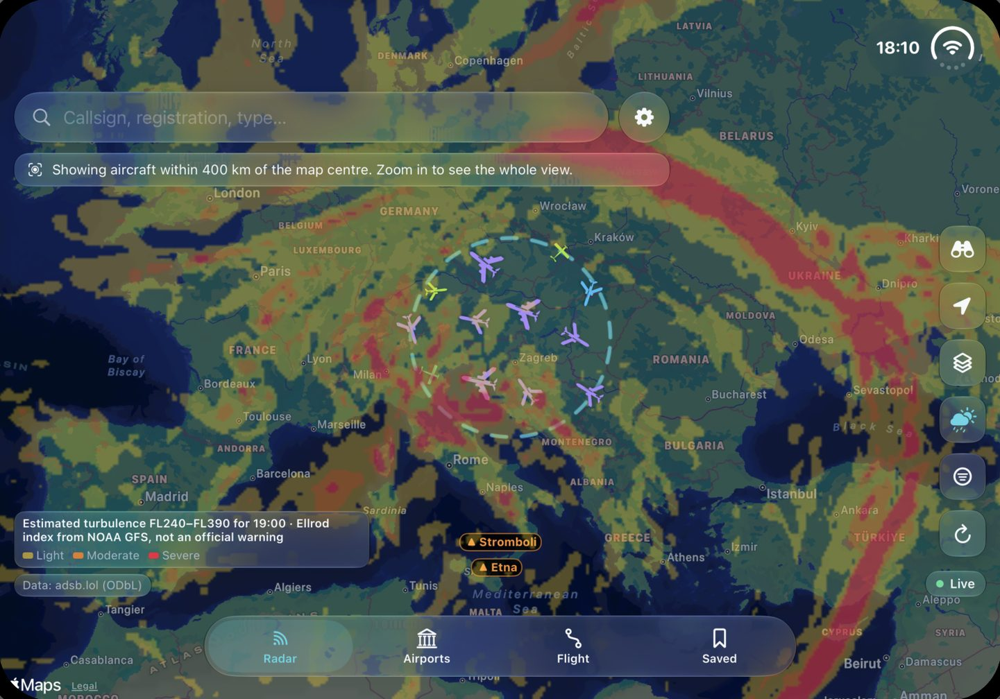
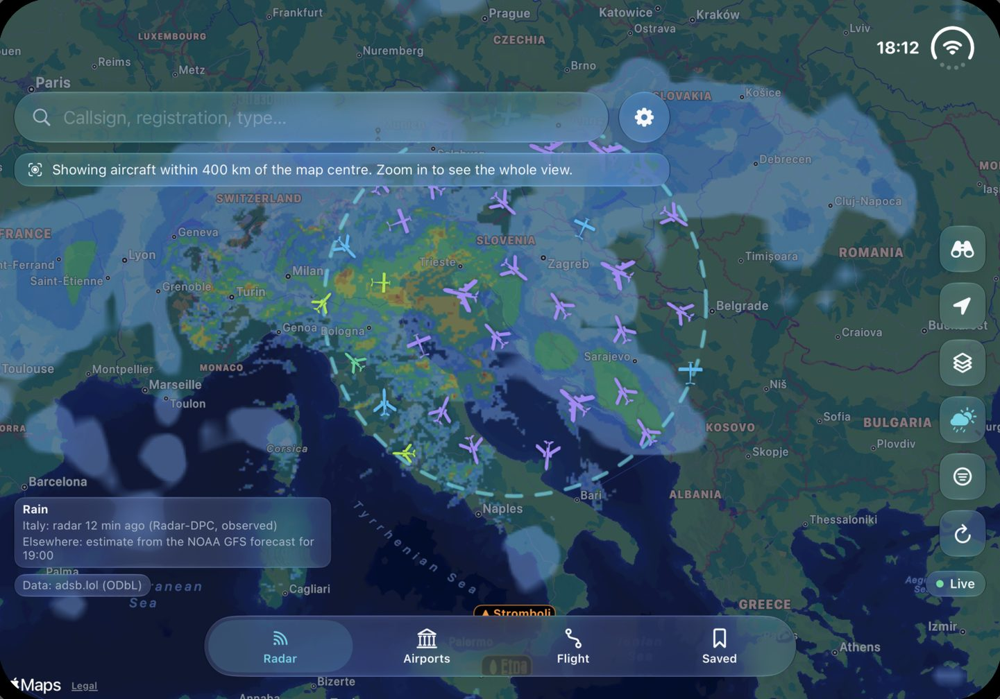
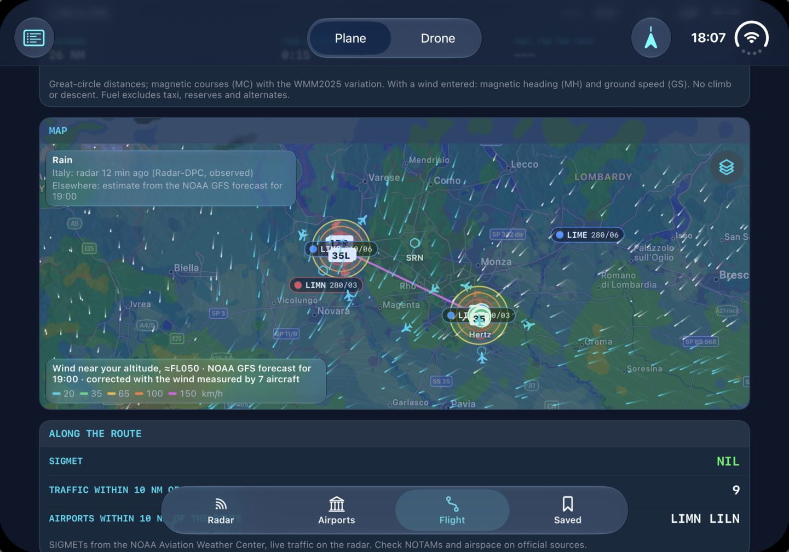
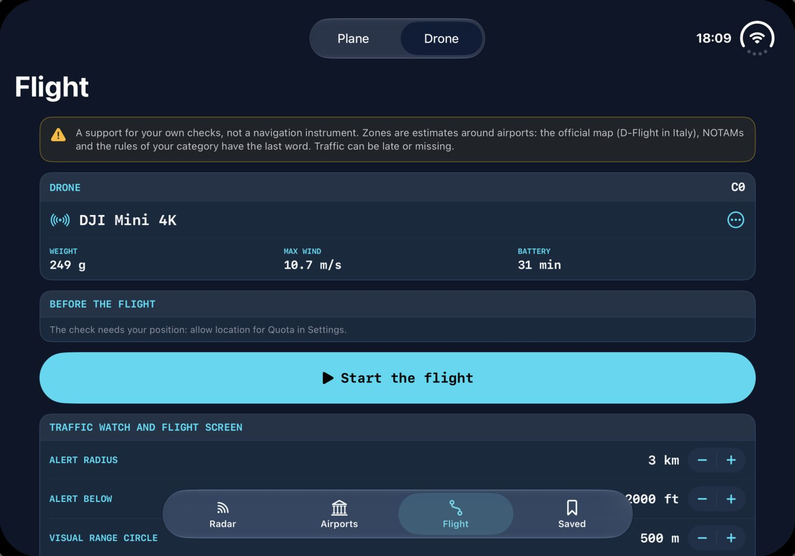
On the inner screen the card sits beside the map instead of covering it: callsign, type, registration, live altitude and speed, the route and the photo.
Sullo schermo interno la scheda sta accanto alla mappa invece di coprirla: nominativo, tipo, marche, quota e velocità in tempo reale, la rotta e la foto.
Layers, filters, weather and location slide along with the card, so they stay within reach of your thumb and never end up underneath it.
Livelli, filtri, meteo e posizione scorrono insieme alla scheda, così restano sotto il pollice e non finiscono mai sotto di essa.
An estimate between FL240 and FL390 from the NOAA GFS forecast winds, drawn on the wide map so a whole route fits in one view.
Una stima tra FL240 e FL390 dai venti previsti dal NOAA GFS, disegnata sulla mappa larga così un'intera rotta sta in una sola vista.
The Civil Protection radar over Italy, refreshed every 5 minutes, and the forecast elsewhere: the legend always says which one you are looking at.
Il radar della Protezione Civile sull'Italia, aggiornato ogni 5 minuti, e la previsione altrove: la legenda dice sempre quale stai guardando.
Waypoints on one side, the map on the other: wind along the route, SIGMETs and pilot reports, terrain profile and the airports at each end.
Punti di rotta da un lato, mappa dall'altro: vento lungo la rotta, SIGMET e riporti dei piloti, profilo del terreno e gli aeroporti alle due estremità.
Pick your drone, check wind, Kp index and zones for the spot, then start the flight with the live view and traffic around you. Support only, not an authorization.
Scegli il drone, controlla vento, indice Kp e zone del posto, poi inizia il volo con la vista dal vivo e il traffico intorno. Solo un supporto, non un'autorizzazione.
What Quota does
Cosa fa Quota
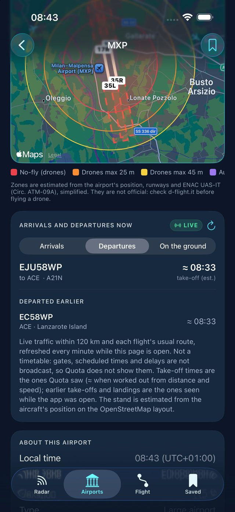
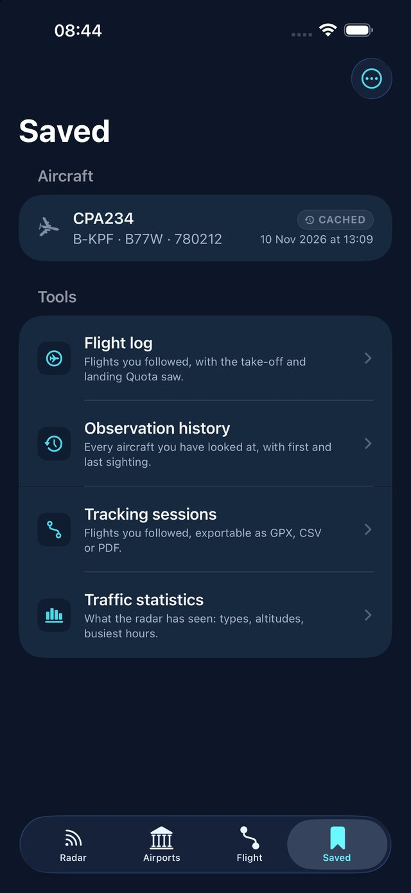
Private
Privata
No account, no analytics, no tracking. Sync goes through your own iCloud.
Niente account, analisi o tracciamento. La sincronizzazione passa dal tuo iCloud.
Free
Gratis
Every feature, with no subscription and no ads, built on open data.
Ogni funzione, senza abbonamenti né pubblicità, su dati aperti.
Weather on every map
Meteo su ogni mappa
Wind, rain, clouds, storms, visibility, icing, jet stream, turbulence, METAR, PIREP and SIGMET. Off by default.
Vento, pioggia, nuvole, temporali, visibilità, ghiaccio, corrente a getto, turbolenza, METAR, PIREP e SIGMET. Spenti di default.
Rain radar and forecast
Radar pioggia e previsione
Over Italy, the Civil Protection radar. Everywhere else, an estimate from the NOAA GFS forecast. Both drawn the same way, with adjustable opacity, and the legend always says which is which.
Sull'Italia, il radar della Protezione Civile. Nel resto del mondo, una stima dalla previsione NOAA GFS. Disegnate allo stesso modo, con opacità regolabile, e la legenda dice sempre quale è quale.
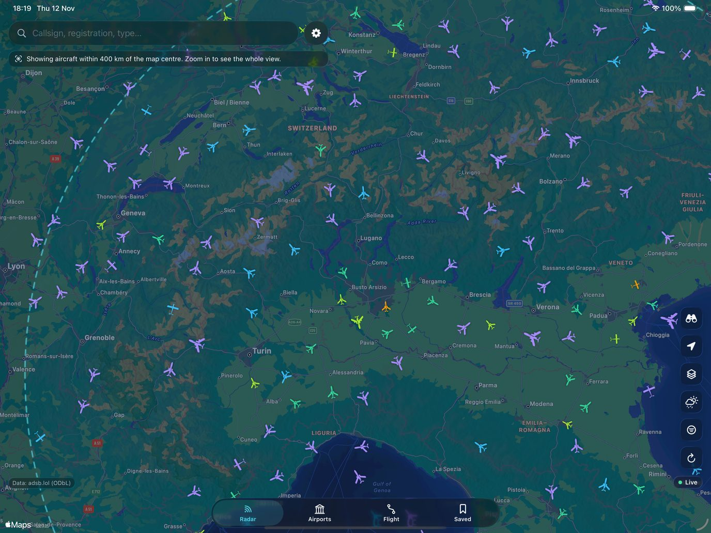
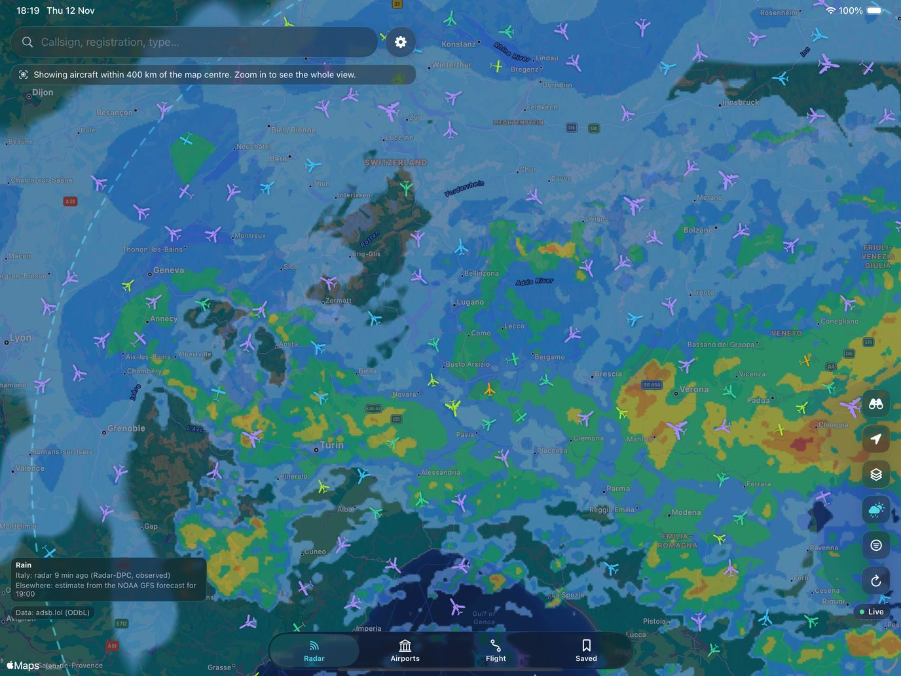
Drag to compare.
Trascina per confrontare.
For pilots and drone pilots
Per piloti e piloti di droni
Plan a flight, follow it with the map and the instruments, and fly a drone knowing what is around you.
Pianifichi un volo, lo segui con la mappa e gli strumenti, e fai volare un drone sapendo cosa c'è intorno.
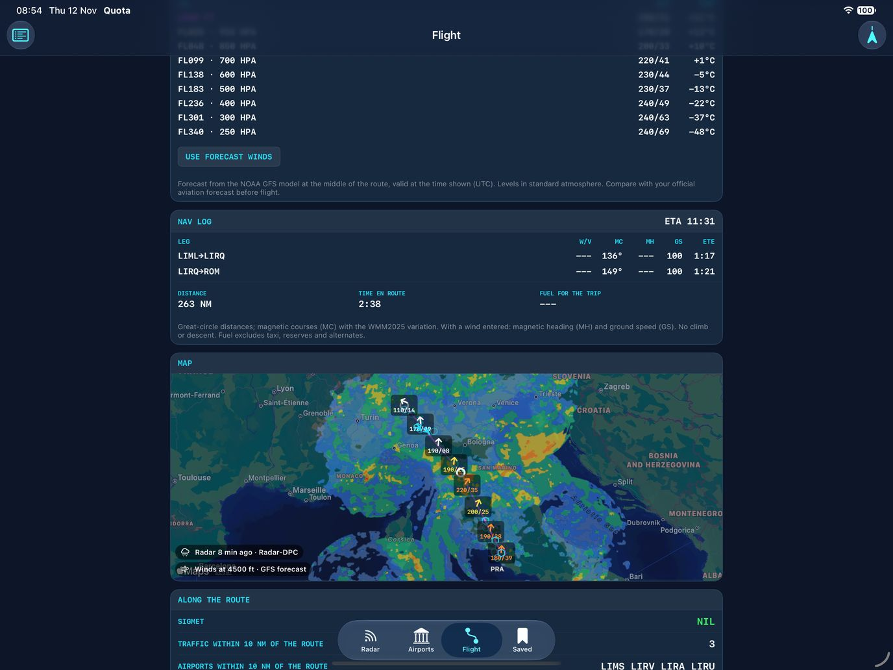
Flight plan
Piano di volo
Build the route from airports, VOR, NDB or coordinates, or draw it on the map. The nav log works out each leg for the aircraft you choose.
Costruisci la rotta da aeroporti, VOR, NDB o coordinate, oppure la disegni sulla mappa. Il log di navigazione calcola ogni tratta per l'aereo che scegli.
- Magnetic courses, wind correction, ground speed, times and fuel
- Winds and temperatures aloft from the NOAA GFS forecast
- Terrain profile along the route
- SIGMET, traffic and airports along the way
- Rotte magnetiche, correzione vento, velocità al suolo, tempi e carburante
- Venti e temperature in quota dalla previsione NOAA GFS
- Profilo del terreno lungo la rotta
- SIGMET, traffico e aeroporti lungo la strada
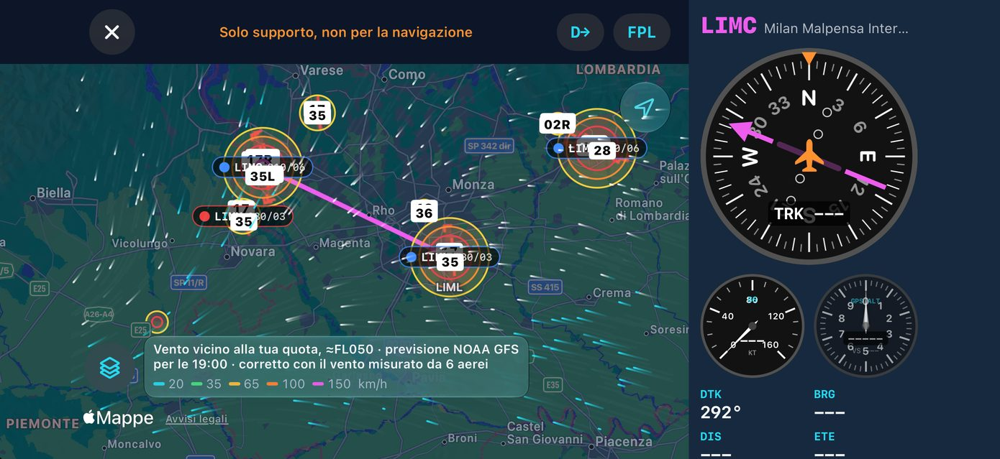
Flight mode
Modalità volo
A moving map with your route and GPS instruments beside it, in portrait or landscape.
Una mappa mobile con la rotta e gli strumenti GPS accanto, in verticale o in orizzontale.
- HSI, track, ground speed and GPS altitude
- Direct-To any airport
- Every weather layer behind one button
- Take-off and landing times in the logbook
- HSI, traccia, velocità al suolo e quota GPS
- Direct-To verso qualsiasi aeroporto
- Tutti i livelli meteo dietro un solo pulsante
- Orari di decollo e atterraggio nel libretto
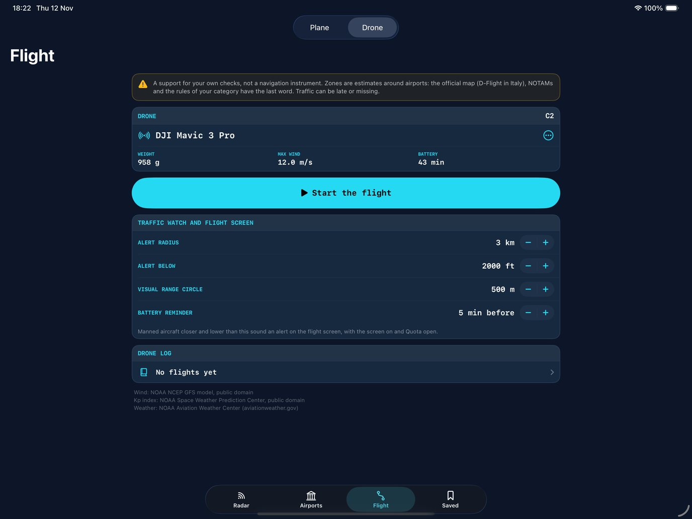
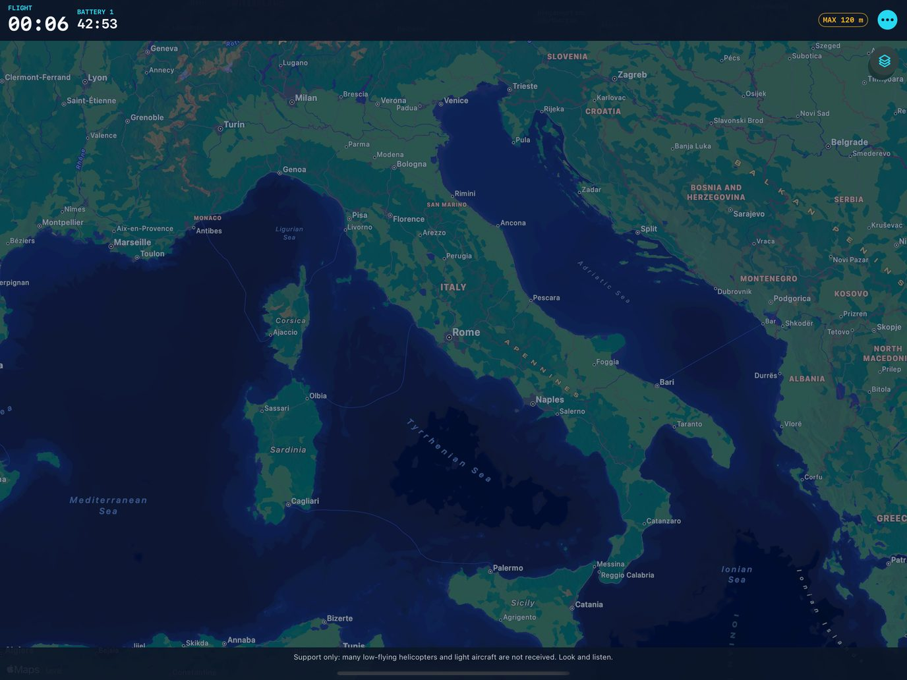
Drone mode
Modalità drone
Choose your drone and its limits, then start the flight. The flight screen keeps manned traffic and the conditions in view.
Scegli il drone e i suoi limiti, poi inizi il volo. La schermata di volo tiene in vista il traffico con pilota e le condizioni.
- Estimated zones around airports
- Alerts with sound and vibration for manned aircraft nearby
- Flight timer and battery reminder
- Surface wind, Kp index and a log of every flight
- Zone stimate intorno agli aeroporti
- Avvisi con suono e vibrazione per gli aerei con pilota vicini
- Timer di volo e promemoria della batteria
- Vento al suolo, indice Kp e un registro di ogni volo
Quota is a support for planning and situational awareness, not a navigation or weather-avoidance instrument. Always use official charts, NOTAMs, briefings and your instruments. Drone zones are estimates, not official airspace.
Quota è un supporto alla pianificazione e alla consapevolezza della situazione, non uno strumento di navigazione né per evitare il maltempo. Usa sempre carte ufficiali, NOTAM, briefing e i tuoi strumenti. Le zone per i droni sono stime, non spazio aereo ufficiale.
Quota – Flight Radar
Free on the App Store for iPhone, iPad, Mac with Apple silicon and Apple Watch.
Gratis sull'App Store per iPhone, iPad, Mac con Apple silicon e Apple Watch.
Questions
Domande
Do I need an account or a key?
No. Aircraft appear right away, worldwide, from adsb.lol.
Is it really free?
Yes, every feature. The data sources are free and open, and the only service Quota runs, for take-off alerts, fits in a free plan, so there's nothing to pay for.
Why is an aircraft missing, or late?
Coverage depends on volunteers with receivers: dense over Italy and much of Europe, thinner elsewhere. Some aircraft don't broadcast their position, and positions are a few seconds old.
What is real and what is estimated?
Real: positions, altitude, speed and callsign, broadcast by the aircraft and received by volunteers. Estimated, and marked as such: arrival times, take-off times worked out from distance, the turbulence map, rain outside Italy and the usual route of a callsign, which is a habit, not today's flight plan. When Quota has nothing reliable, it shows nothing.
Why no schedules, gates or delays?
ADS-B doesn't carry them. Arrival times in Quota are estimates, and they're labelled that way.
Where does the rain work?
Everywhere. Over Italy it's the Civil Protection radar; elsewhere it's an estimate from the NOAA GFS forecast, and the legend says which. Use it to keep an eye on things, not to avoid weather.
Does it work on Apple Watch?
Yes. The aircraft you follow on the radar and your saved flights show up on the watch, with complications.
Can I use it to navigate?
No. The pilot and drone tools are there to help you plan and keep an eye on things. Use official charts, NOTAMs, briefings, your instruments and ATC.
Does it work on Mac?
Yes, on Macs with Apple silicon, as the iPad app. What needs a camera, motion sensors or GPS is hidden there.
What data does Quota collect?
None. Your saved items, log and settings stay on your devices and, if sync is on, in your own iCloud, which the developer can't read. Details in the privacy policy.
Serve un account o una chiave?
No. Gli aerei compaiono subito, in tutto il mondo, da adsb.lol.
È davvero gratis?
Sì, ogni funzione. Le fonti dei dati sono aperte e gratuite, e l'unico servizio di Quota, per gli avvisi di decollo, sta in un piano gratuito, quindi non c'è niente da pagare.
Perché un aereo manca o è in ritardo?
La copertura dipende da volontari con un ricevitore: fitta sull'Italia e su gran parte dell'Europa, più rada altrove. Alcuni aerei non trasmettono la posizione, e le posizioni hanno qualche secondo.
Cosa è reale e cosa è stimato?
Reali: posizione, quota, velocità e nominativo, trasmessi dall'aereo e ricevuti da volontari. Stimati, e indicati come tali: orari di arrivo, orari di decollo calcolati dalla distanza, la mappa della turbolenza, la pioggia fuori dall'Italia e la rotta abituale di un nominativo, che è un'abitudine e non il piano di volo di oggi. Quando Quota non ha niente di affidabile, non mostra niente.
Perché niente orari, gate o ritardi?
L'ADS-B non li trasmette. Gli orari di arrivo in Quota sono stime, e sono scritti come tali.
Dove funziona la pioggia?
Ovunque. Sull'Italia è il radar della Protezione Civile; altrove è una stima dalla previsione NOAA GFS, e la legenda dice quale delle due. Usala per tenere d'occhio la situazione, non per evitare il maltempo.
Funziona su Apple Watch?
Sì. L'aereo che segui sul radar e i voli salvati compaiono sull'orologio, con le complicazioni.
Posso usarla per navigare?
No. Gli strumenti per piloti e droni servono a pianificare e a tenere d'occhio la situazione. Usa carte ufficiali, NOTAM, briefing, i tuoi strumenti e l'ATC.
Funziona su Mac?
Sì, sui Mac con Apple silicon, come app per iPad. Lì è nascosto quello che richiede fotocamera, sensori di movimento o GPS.
Quali dati raccoglie Quota?
Nessuno. Salvati, storico e impostazioni restano sui tuoi dispositivi e, se la sincronizzazione è attiva, nel tuo iCloud, che lo sviluppatore non può leggere. I dettagli nell'informativa sulla privacy.
Support
Supporto
Report a problem, flag data that doesn't match what you see, or suggest an improvement. Every report is read, and the details below are what make it possible to reproduce the problem and fix it in an update.
Segnala un problema, un dato che non corrisponde a quello che vedi o proponi un miglioramento. Ogni segnalazione viene letta, e i dettagli qui sotto sono ciò che permette di riprodurre il problema e correggerlo in un aggiornamento.
Prefer to report in public and follow the progress?Preferisci segnalare in pubblico e seguirne l'avanzamento? Open an issue on GitHubApri una segnalazione su GitHub